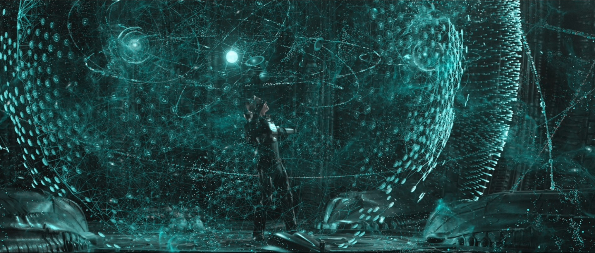

Abstract Algebra
Cyclic groups and cyclic subgroups
Theorem. Let $H = \< x \>$ be a cyclic group.
Classification of groups of order $4$
Proposition. Every group of order $4$ is isomorphic to either $Z_4$ or $V_4 \cong Z_2 \times Z_2.$
Group Actions
Definition. A group action of a group $G$ on a set $A$
is a map from $G\times A$ to $A,$ written as $g \. a$ for all
$g\in G, a\in A$ satisfying:
- $\s_g$ is a permutation of $A$: $\s_g \in S_A.$
- The map $\ff:G\longrightarrow S_A$ defined by $\ff(g) = \s_g$ is a homomorphism.
The map $\ff$ completely characterizes an action of $G$ on $S,$ so we can define the kernel of the action to be the kernel of $\ff:$
Definition. The kernel of an action of $G$ on $A$ is $$\ker \ff = \ker(G, A) = \{ g \in G : \ff(g) = \s_g = 1 \in S_A \},$$ i.e. it's the set $$\{ g \in G : \s_g(a) = g \. a = a \text{ for all } a\in A \},$$ in other words elements that fix all $a \in A.$
Quotient Groups
Centralizers, Centers, Normalizers, and Stabilizers
Definition. Let $A$ be any nonempty subset of a group $G.$ The centralizer of $A$ in $G$ is the set $$C_G(A) = \{ g \in G : gag^{-1} = a \text{ for all } a \in A \},$$ i.e. it's the set of all elements in $G$ that commute with all elements in $A.$ As a special case, the center of $G$ is $$Z(G) = C_G(G) = \{ g \in G : gxg^{-1} = x \text{ for all } x \in G \},$$ i.e. elements that commute with everyone in $G.$ The normalizer of $A$ is the set $$N_G(A) = \{ g \in G : gAg^{-1} = A \}.$$
Definition. Let $G$ be a group acting on a set $S$ and let $s$ be some fixed element of $S.$ The stabilizer of $s$ in $G$ is the set $$\stab_G(s) = \{ g \in G : g \. s = s \}.$$
Now we'll show that normalizers are a special case of stabilizers: let $G$ act by conjugation on the power set $\PP(G)$ consisting of all subsets of $G,$ so that for each $g\in G$ and $A \in \PP(G),$ $$g \. A = gAg^{-1}.$$ Then the stabilizer of $A$ under this action is $$\stab_G(A) = \{ g \in G : g\. A = gAg^{-1} = A \} = N_G(A).$$
Let's see what the kernel of this action looks like: $$\ker(G, \PP(G)) = \{ g \in G : g \. A = gAg^{-1} = A \text{ for all } A\in\PP(G) \},$$ or elements in $G$ that normalize all subsets of $G.$ Since elements of $Z(G) = C_G(G)$ commute with all elements of $G,$ $$Z(G) \leq \ker(G, \PP(G)).$$ In fact, taking singleton subsets $A = \{ a \},$ we have $$\ker(G, \PP(G)) \leq Z(G),$$ so the two are identical: $$\ker(G, \PP(G)) = Z(G).$$
Next we'll show that centralizers are kernels of actions: let $N_G(A)$ act on $A$ by conjugation. The kernel is $$\ker(N_G(A), A) = \{ g \in N_G(A) : g \. a = gag^{-1} = a \text{ for all } a \in A \} = C_{N_G(A)}(A),$$ i.e. elements in $N_G(A)$ that commute with all elements in $A.$ It's easy to see that $$C_{N_G(A)}(A) = C_G(A),$$ and so $$\ker(N_G(A), A) = C_G(A).$$ While we're at it let's also calculate the stabilizer of an element $a \in A:$ $$\stab_{N_G(A)}(a) = \{ g \in N_G(A) : g\. a = gag^{-1} = a \} = C_{N_G(A)}(a),$$ i.e. elements in $N_G(A)$ that commute with $a.$
Finally for completeness let $C_G(A)$ act on $A$ by conjugation. Then \begin{align*} \ker(C_G(A), A) &= \{ g \in C_G(A) : g\. a = gag^{-1} = a \text{ for all } a\in A\} = C_G(A) \\ \stab_{C_G(A)}(a) &= \{ g \in C_G(A) : g\. a = gag^{-1} = a \}. \end{align*}
Corollary. For any subset $A$ of a group $G,$ $$C_G(A) = C_{N_G(A)}(A) \leq N_G(A).$$
Summary. Normalizers are stabilizers and centralizers are kernels of conjugate actions, and \begin{align*} \ker(G, \PP(G)) = Z(G) &\leq C_G(A) \\ &= \ker(N_G(A), A) = \ker(C_G(A), A) \\ &\leq N_G(A) = \stab_G(A). \end{align*} It's nice how you can line them up like that.
Corollary. Let $\ff$ be an action of $G$ on $A.$ Then $$\ker(\ff, G, A) = \Cap_{a\in A} \stab_G(a).$$
Cosets of a kernel
Proposition. Let $\ff : G \longrightarrow H$ be a homomorphism with kernel $K.$ Let $X \in G/K$ be the fiber above $a,$ i.e. $X = \ff^{-1}(a).$ Then for any $u \in X,$ $$X = u K = K u,$$ i.e. every fiber is represented by any of its elements modulo the kernel of the homomorphism.
Modular Arithmetic
Example. Let $G = \ZZ, H = \ZZ/10\ZZ = \{ 0:9 \},$ and $\ff : G \longrightarrow H$ such that $$\ff(m) = \bar{m} = m \mod 10.$$ Then \begin{align*} \ker \ff = K &= \text{ integers congruent 0 mod 10} \\ &= \{ \dots, -10, 0, 10, 20, 30, \dots \} \end{align*} and the fiber $X$ above $\bar{1} \in H$ is the set of integers congruent $1\mod 10,$ and \begin{align*} X &= 1 + K \\ &= 11 + K \\ &= 21 + K \\ &= \text{etc.} \end{align*}
$G/K$ is a group for kernel $K$
Proposition. Let $G$ be a group and $K$ be the kernel of some homomorphism from $G$ to another group. Then the set $G/K$ of left cosets of $K$ with operation defined by $$uK \cdot vK = (uv)K$$ is a group. Same for the set $G/K$ of right cosets of $K.$
Proposition. Let $N \leq G.$ The set of left cosets of $N$ form a partition of $G.$ Furthermore, for any $u, v\in G,$ $$uN = vN \quad\text{ iff }\quad v^{-1}u \in N,$$ and in particular iff $u$ and $v$ are representatives of the same coset.
Example. Let $N = 4\ZZ \leq \ZZ.$ The left cosets of $N$ are \begin{align*} 0 + 4\ZZ &= \{ \dots, -4, 0, 4, 8,\dots \} \\ 1 + 4\ZZ &= \{ \dots, -3, 1, 5, 9,\dots \} \\ 2 + 4\ZZ &= \{ \dots, -2, 2, 6, 10,\dots \} \\ 3 + 4\ZZ &= \{ \dots, -1, 3, 7, 11,\dots \} \end{align*} and e.g. $$5 + 4\ZZ = 1 + 4\ZZ,$$ because $$-1 + 5 \equiv 0 \mod 4,$$ or in other words $$-1 + 5 \in 4\ZZ.$$
Proposition. Let $N \leq G.$
Equivalent Formulations of a Normal Subgroup
Theorem. Let $N \leq G.$ The following are equivalent:
Theorem. A subgroup $N \leq G$ is normal iff it is the kernel of some homomorphism.
Given a homomorphism $\ff: G \longrightarrow H,$ we can find its kernel $K,$ which is normal in $G$ and so $G/K$ is a group and is isomorphic to the image of $G$ under $\ff:$ $$G/K \cong \ff(G).$$ This means that if we want to study images of $G$ under any homomorphism $\ff,$ we can just study $G/K.$ It also means that all the homomorphisms we can define on $G$ are determined by the structures of $G/K$ for $K \normal G,$ i.e. of $G$ and its normal subgroups.
Question. Are there groups so different that you can't define any nontrivial homomorphism between them?
Example. Ah yes: there is no nontrivial homomorphism of $Z_2$ into $\ZZ$ or vice versa because $Z_2$ has an element of order $2$ and $\ZZ$ doesn't.
Examples of normal subgroups and quotients
Example. $1, G \normal G, G \cong G/1, 1 \cong G/G.$
Example. If $G$ is abelian, then any subgroup of $G$ is normal.
Example. Let $G = \ZZ.$ Then every subgroup $N \leq G$ is cyclic and looks like $$N = \< n \> = \< -n \> = n\ZZ$$ for some $n,$ and $$G/N = \ZZ/n\ZZ = \< \bar{1} \> = \< \bar{0}, \bar{1}, \ldots, \bar{n-1} \>$$ is the system of complete residues mod $n,$ where $\bar{k} = k + n\ZZ.$
Example. $Z(D_8) = \< r^2 \>$ and $Z(Q_8) = \< -1 \>,$ and $$D_8 / Z(D_8) \cong Q_8 / Z(Q_8) \cong V_4 \cong Z_2 \times Z_2.$$
Quotient groups of a cyclic group
Theorem. Quotient groups of a cyclic group are cyclic, and the image of a generator $g$ for $G$ is $\bar{g} = gN,$ a generator of the quotient $G/N.$ If in addition $G$ is a finite cyclic group, then $$|G/N| = \frac{|G|}{|N|}.$$
Exercises
Homomorphic preimage of a subgroup
Proposition. Let $\ff: G\longrightarrow H$ be a homomorphism and let $E \leq H.$ Then $\ff^{-1}(E) \leq G,$ i.e. the homomorphic preimage of a subgroup is a subgroup. If $E$ is also normal in $H,$ then its preimage is also normal in $G.$ Finally as a corollary $\ker \ff = \ff^{-1}(1) \normal G.$
Cosets of the kernel are fibers of the homomorphism
Proposition. Let $\ff:G\longrightarrow H$ be a homomorphism with kernel $K.$ Then the elements of $G/K$ are of the form $gK$ for some $g\in G,$ and for a fixed $gK \in G/K,$ $\ff$ maps all elements $x \in gK$ (and only those) to the same element $h\in H,$ i.e. each coset of $K$ is the fiber above $h$ for some $h\in H.$
Proof. Let $gK \in G/K,$ and $gk_1, gk_2 \in gK.$ Then $$\ff(gk_1) = \ff(g) \ff(k_1) = \ff(g) = \ff(g) \ff(k_2) = \ff(gk_2),$$ so $gk_1$ and $gk_2$ map to the same element, say $h\in H.$ To show the converse, that these are the only elements mapped to $h,$ let $\ff(x) = h.$ We want to show that $x \in gK.$ Consider $g^{-1}x:$ $$\ff(g^{-1} x) = \ff(g)^{-1} \ff(x) = h^{-1} h = 1 \in H,$$ so $g^{-1}x = k$ for some $k\in K,$ and so $x = gk.$ \qed
Representative of inverse elements in $G/K$
Proposition. Let $\ff:G\longrightarrow H$ be a homomorphism with kernel $K,$ let $X, Y \in G/K$ and $Z = XY.$ If $x \in X, z\in Z,$ then there is a $y\in Y$ s.t. $xy = z,$ namely $y = x^{-1} z.$
Quotient of an abelian group
Proposition. Let $A$ be an abelian group. Then any subgroup $B$ is normal in $A,$ and $A/B$ is abelian.
Nonabelian group $A$ s.t. quotient $A/B$ is abelian
Nonexample. $A = Q_8, B = \< -1 \>.$ Then $A/B \cong V_4 \cong Z_2 \times Z_2$ is abelian.
Order of elements of a quotient group
Proposition. Let $G/N$ be a quotient. Then $|gN| = n,$ where $n$ is the smallest positive integer s.t. $g^n \in N.$ If no such $n$ exists, then $gN$ has infinite order.
Nonexample. We already know that $|gN| \leq |g|.$ An example of $gN$ having order strictly smaller than $g$ is in $Q_8/\< -1 \> \cong Z_2 \times Z_2,$ whose nonidentity elements all have order 2, while $Q_8$ has elements of order $4,$ namely $\pm i,\pm j,\pm k.$
More examples of homomorphisms, kernels, images, and fibers
Example. Define $\ff:\CC^\times \longrightarrow \RR^\times$ by $$\ff(a+ib) = a^2 + b^2.$$ Then $\ff$ is a homomorphism, and \begin{align*} \ff(\CC^\times) &= \RR^+ \\ \ker \ff &= \{ z = a+ib \in \CC^\times: \ff(z) = a^2 + b^2 = 1 \in \RR^\times \} \\ &= \text{unit circle in } \CC, \end{align*} and the fibers of $\ff$ are circles of radius $r \in \RR^\times.$
Reference
- Abstract Algebra by Dummit and Foote.
- Everything else from the web.